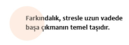

Farkındalık

Hayatta sistematik bir şekilde farkındalık bilincinde olmak stresle uzun vadede başa çıkmanın temel taşıdır. Farkındalık demek insanın kendi hayatıyla bağlantıda olması, şimdide kalması, uyanık ve bilinçli olması ve hayatın akışıyla her an temas halinde olması anlamına gelir. Ayrıca farkındalık, varoluşu her şeyiyle birlikte yargısız biçimde algılamak ve dram enerjisinden neşe enerjisine yönelmektir. Zorluklardan kaçıp başımızı kuma gömmek yerine, o zorluğu hayatın bize sunduğu bir olgunlaşma basamağı olarak görmektir farkındalık.
Farkındalık yoluyla stresle başa çıkmak, kişinin strese yol açan olguları (stres kaynağı) ve stres reaksiyonlarını algılaması ve gözlemlemesiyle gerçekleşir. İnsanın gündelik hayatta otomatik cereyan eden stres kaynakları ve bunlara verdiği tepkilerle ilgili geliştirdiği bu farkındalık başlı başına iyileşmeye yönelik değişimlerin harekete geçmesini sağlar. Çünkü “Bu olgu bende şu stres tepkisine yol açıyor” farkındalığı kişinin o anda bedenine ve nefesine özen göstermesine, otomatik stres döngüsünü kırmasına ve duruma farklı bir tepki vermesine yol açacaktır.
Düşünün ki, her gün işten çıkıp arabanıza bindiğinizde hemen radyonuzu açıyorsunuz. Bu davranışınız o kadar otomatikleşmiş ki, artık arabada radyo dinlemenin sizi aslında strese soktuğunu bile algılamıyorsunuz.

Mesela Songül her gün iş çıkışı arabaya bindiğinde önce radyoyu açıyor ve yıllardır aynı şeyi yapmasına rağmen, bunun kendisinde strese yol açan bir olgu olduğunu bilmiyor. Farkındalık çalışmalarını gündelik hayatına oturttuktan sonra kendinde gözlemlediği davranış değişimini şöyle özetliyor:
Geçen gün her zamanki gibi arabama biner binmez radyoyu açtım. Yoğun bir işgününden çıktığım için çok yorgundum. Bu arada yol üstündeki süpermarketlerden birinde durup alışveriş yapmak, oğlumun okulunda yapılacak veli toplantısı, kız arkadaşıma alacağım doğum günü armağanı gibi yapmam gereken şeyleri düşünüyordum. Birden midemde bir basınç hissettim, midem yanmaya başladı ve gerildim. Kırmızı ışık yanınca da birden öfkelendim. O anda farkındalık alıştırmalarını hatırladım. Düşüncelerimi şimdiki zamana getirerek dikkatimi nefesime yönelttim. İçten içe ışığın kırmızı olmasına şükrediyordum. Çünkü ancak bu şekilde içinde bulunduğum durumun bilincine varabilmiştim. Kendime şu soruları sormaya başladım: Şu anda dikkatim nerede? Bedenimde şu anda neler algılıyorum? Kendime bunları sorarken birden radyoda çalan müziğin beni gerdiğini fark ettim. Ayrıca düşünecek bunca şey varken dışarıdan başka bir uyarıcıya ihtiyacım yoktu. Daha çok sessizliğe ve rahatlığa ihtiyacım vardı. Ve bilinçli bir şekilde radyoyu kapattığımda bedenimin ve duygularımın rahatladığını ayrımsadım. Birkaç defa derin nefes aldım ve rahat bir şekilde eve geldim.
Yukarıdaki örnekte de görüldüğü gibi, kişi farkındalık gösterdiği anda strese yol açan olguyu ve stres tepkisini algılıyor ve bir sonraki adımda bilinçli bir tercih yaparak radyoyu kapatıyor. Ama bu birkaç farkındalık alıştırmasıyla elde edilebilecek bir durum değildir.
Farkındalık her şeyden önce hayatın akışında benimsediğimiz bir tutum olmalıdır. Ve farkındalığı tutum haline getiren biri, yalnız kendisine değil, başka insanlara, hayvanlara, bitkilere, çevreye, içinde yaşadığı eve ve dünyaya da özen gösterir. İşte ancak böyle bir tutum gündelik hayat kalitemizin yükselmesini sağlar.
Farkındalığın tarihçesi
İngilizcede mindfullness, Almancada achtsamkeit kavramlarıyla tanımlanan farkındalığın psikoloji alanına bir terapi metodu olarak girmesi moleküler biyolog Prof. Dr. Jon Kabat-Zinn ile Massachusetts Üniversitesi Tıp Fakültesi’nin ortak çalışmasıyla gerçekleşmiştir. Zen ve Vipasana meditasyonları ve yoga çalışmalarından etkilenerek bu yöntemi geliştiren Jon Kabat-Zinn farkındalık çalışmalarının kısa zamanda gösterdiği başarıyla Massachusetts Üniversitesi bünyesinde bir stres tedavi merkezi kurmuştur (Stress Reduction Clinic). Bu klinikte yapılan bilimsel araştırmalar, farkındalığın korku bozuklukları, stres kaynaklı ağrılar, kalp ve dolaşım hastalıkları, fibromiyalji, cilt hastalıkları, AİDS, kanser ve depresyon gibi hastalıkların tedavisinde başarılı bir yöntem olduğunu göstermiştir. İnsanların hastalıktan kaynaklanan streslerini azaltmaları ve kendilerini fiziksel ve ruhsal olarak daha iyi hissetmeleri genel olarak yaşam kalitelerinin yükselmesini sağlar.
Jon Kabat-Zinn farkındalığı şöyle tanımlıyor: ‘Farkındalık, kişinin belirli bir şekilde dikkatli ve yargılamadan şimdiki zamanın bilincinde olmasıdır.” Bu tanımlamaya göre farkındalık, yaşamın, yani anın farkında ve onunla temas halinde olmak anlamına gelir.
Farkındalık alıştırmalarındaki çakıltaşları
Nasıl başka bir şehre ya da ülkeye gittiğimizde kendimizi o yolculuğa hazırlıyorsak, farkındalık yolculuğuna çıkarken de kendimizi hazırlamalıyız.
Bu hazırlıkta bilmeniz gereken şeylerden biri, bu yolculuğun sizi kendi merkezinize ya da “içsel yuvanıza” götürdüğüdür. Uzak bir şehirde bulunan bir hazineyi bulmak için yollara düşen gezginin sonunda o hazineyi evindeki sobanın altında bulması gibi, sizin yaptığınız farkındalık yolculuğu da sizi sonunda kendinize götürecektir.
İnsanın kendi merkezini bulması ya da kendi “içsel yuvasına” dönmesi demek, şimdiye, yani tek var olan zamana gelmesidir. Geçmiş ve gelecek arasında sıkışmış olan şimdiki zaman, yani an, bizim sobanın altındaki hazinemizdir. Nefes alıp verdiğimiz, hareket ettiğimiz, yaşamın bize sundukları karşısında kararlar aldığımız, yani yaşadığımız yegâne zaman şimdiki zamandır. İnsan, gerektiğinde tabii ki geçmişi ve geleceği hakkında düşüncelere girecektir, ama bunu şimdiyle olan bağını koparmadan yapacağı için, geçmiş ve gelecekle ilgili düşünce ve planlarının içinde boğulmayacaktır.
Kişinin kendi merkezine, “içsel yuvasına” ya da şimdiye gelmesi aynı zamanda da kendisini evrenin bolluğuna açması anlamına gelir. Bu bazen kolay, bazen zor, bazen sıkıcı, bazen heyecanlı ya da başka türlü algılansa da şimdiki zamanda olmak kişiye yeni bir yaşam sevinci ve karar verme neşesi katar. Yaşamın size sunduğu her anı nasıl karşıladığınız ve bu anla neler yaptığınız ve hayatı genel olarak nasıl karşıladığınız farkındalığın yapıtaşlarıdır. Şimdi farkındalık yolculuğunda karşınıza çıkacak çakıltaşlarına beraber bakalım:
Hiçbir yol kolay değil ama zor da değildir

Alışkanlıklarımızı değiştirmenin kolay olmadığını hepimiz biliriz. Alışkanlık ne kadar güçlü ve ne kadar hayatın içine sinmişse değiştirmesi de o denli güçtür. Bu; disiplin, sabır ve dikkat gerektiren bir süreçtir. Bu süreçte kendinize özen gösterip farkındalık alıştırmalarından bazılarını yapmanızda fayda vardır. Günde en az bir saat alıştırma yapmanız farkındalık sürecinizi hızlandıracaktır. İsterseniz kendinize ayırdığınız ve alıştırmaları yapacağınız bir saati, dörde ya da beşe bölüp, gün içerisine de dağıtabilirsiniz.
Alıştırmalara günde bir saat ayırmak herkesin zamanla yarıştığı bir dünyada bazılarına zor gelebilir. Nitekim birçok insan “İşyerimde ya da özel hayatımda cereyan eden olaylar yüzünden alıştırmaları yapamazsam ne olur?” diye düşünür. Ancak burada göz önünde bulundurmalıyız ki, dünyada milyonlarca insan günde beş defa niyet ederek namaz kılıyor. Siz de benzer bir tutumla, iç disiplin ve niyetle alıştırmalarınızı yaparsanız, bunun her gün mümkün olabileceğini göreceksiniz. Hiçbirimiz gelecekte ne olacağını bilemeyiz. Önemli olan bu sürece girmeye evet demeniz ve elinizden geleni yapmanızdır.
Bunun için kendinize şimdi şu soruyu sorabilirsiniz: Yaşamımdaki bütün her şeyi ve sağlığımı göz önünde bulundurduğumda bu sürece girmek ve elimden geleni yapmak istiyor muyum?
Yolculuğa devam etmek

En sonunda hazineyi evinde bulan gezgin de engebeli ve zor bir yolculuk yapmıştı. Dağları aşmış, nehirleri geçmiş, çöllerde yürümüştü. Ama buna rağmen yolculuğunu yarıda kesip geri dönmemişti. Siz de farkındalık yolculuğunda zaman zaman bıkar, umutsuzluğa kapılır ve vazgeçmek isteyebilirsiniz. Bazen yanlış bir yolda olduğunuzu düşünüp, yönünüzü değiştirmek ve hatta belki de geriye dönmek isteyebilirsiniz. Sürece devam etmemek konusunda kararlıysanız ve bu karar sizde olumsuz duygulara yol açmıyorsa, o zaman verdiğiniz bu bilinçli karar doğrultusunda hareket edip, süreçten çıkmalısınız.
Ama kararınızda net değilseniz ve bu karar sizde olumsuz duygulara yol açıyorsa, o zaman bu, bir mola vermeniz gerektiğini gösterir. Böyle bir durumda kendinize bu sürece evet dediğinizi hatırlatıp bir süre mola verin. Sonrasında da kaldığınız yerden yolculuğunuza devam edin.
Kendine hassas ve şefkatli davranmak

İçinde yaşadığımız performans toplumu ister istemez hepimizi etkiliyor. Öyle ki, performans ve başarı hırsı, farkındalık çalışmalarına da sinebiliyor. Birçok insan farkındalık alıştırmalarını da bu başarı ve performans baskısıyla yapıp, hedeflerini çok yüksek tutuyor. Oysa farkındalık aynı zamanda da insanın kendisine karşı hassas ve şefkatli davranması anlamına gelir.
Çevremizdeki insanlara kendimize davrandığımızdan çok daha hassas ve şefkatli davranırız. Aynı tavrı kendimize göstermediğimiz gibi, bunu bazı şartlara bağlarız. İnsanlar bu konuda kendilerine “istediğim kiloya geldiğimde, istediğim parayı kazandığımda, bu işimi bitirdiğimde” gibi birçok önkoşul yaratırlar. Kendimizle sevgi ve şefkate dayalı bir ilişki geliştirmemiz yalnızca hayatımızdaki streslerle değil, aynı zamanda varoluş süreciyle de baş edebilmek açısından son derece önemlidir. Çünkü insanın kendisiyle önkoşulsuz bir sevgi ve şefkat ilişkisine girmesi, kendi bedenine, duygularına, davranışlarına, bütün dünyaya ve varoluşa farklı bir perspektiften bakmasına yardımcı olur.
Defansa karşı durmamak

Farkındalığı öğrenmek yabancı bir dil öğrenmeye benzer. Bu süreçte zaman zaman içsel bir defans tutumuna girmeniz gayet normaldir. Defansa giren kişiler alıştırmaları yapmaz, yaptığında da kendi istediği gibi ve keyfince yapar, süreci eleştirmeye ve kışkırtıcı sorular sormaya başlar. Sorulara verdikleri cevaplar da son derece mantıklıdır. Ama yakından incelediğinizde bu tür defansların altında yatan nedenin kişinin değişime karşı hissettiği korku olduğunu görürsünüz.
Farkındalık sürecinde benzer durumlar yaşarsanız bunlara müdahale etmemeye çalışın. Bırakın defansınız da sizinle beraber olsun. Onu yok etmeye ya da alıştırmaları aksatmaya çalışmayın. Defansın hayatımızın bir parçası olduğunu unutmadan ama onu beslemeden yanınızda olmasına izin verin.
Beklentiler

İnsanın farklı bir sürece girdiğinde bazı beklentilerinin olması gayet normaldir. Ancak bazı beklentilerin altında arzu ve hayaller yatar ve kişi bunları bir an önce gerçekleştirmek ister. Mesela yeni bir dil öğrenmeye başladığınızda altı ayda o dilde bir roman okumayı umuyorsanız bu bir beklenti değil, bir hayaldir. Ancak altı ay sonra gündelik hayatın ihtiyaçlarını karşılamayı bekliyorsanız, bu gerçekçi bir beklentidir.
Farkındalık sürecinde kendinize karşı sabırlı olmaya çalışın. Her değişim süreci zaman ve emek gerektirir. Önemli olan beklentilerinizin gerçekçi olmasıdır.
Ama bu, arzu ve hayallerinizin olmayacağı anlamına gelmez. Hepimizin gerçekçi olmayan arzu ve istekleri olabilir. Burada da önemli olan onlarla mücadele etmememizdir. Farkındalık bilinci, arzu ve istekleri de kabul etmek anlamına gelir. Bu aynı zamanda kendimizi kendi insan doğamızla kabullenmemiz ve hayatta her şeyi kontrol edemeyeceğimizi idrak etmemiz açısından da önemlidir.
Hiçbirimiz mükemmel değiliz

Mükemmeliyetçilik diktatoryası yaşanan günümüz dünyasında hepimiz mükemmel bir iş, eş, ev, araba, çocuklar, beden ve ruh arayışındayız. Hayatımızda her şeyin mükemmel olmasını istiyoruz.
Varoluşumuz ve evren ne kadar mükemmel olursa olsun hayatımız mükemmel değildir. Haksızlıklar, adaletsizlikler, şiddet, ekonomik sıkıntılar ve hastalıklar gibi bizi kaygılandıran ve sıkıntıya sokan binlerce nedenin yanı sıra bizi sevindiren, mutlu eden ve neşelendiren milyonlarca durum da vardır.
İnsanın farkındalık bilincinde olması aynı zamanda mükemmeliyetçiliğiyle sağlıklı bir ilişki kurması anlamına da gelir. Mükemmeliyetçilik günümüz dünyasında birçok kişinin hayatına girmiş bir tutumdur. Onunla mücadele etmek yerine, kabullenmek ama beslememek seçilebilecek en etkili yoldur.
Farkındalık bilincini bir tutum haline getirmek

Günümüzde psikoterapi ve yaşam koçluğu artık bir yığın yöntemin uygulandığı birer alan haline geldi. Yaşanan her sorun için belli başlı yöntemler geliştirilip, insanlara sunuluyor. Bu açıdan bakıldığında farkındalık da bu yöntemlerden biri gibi algılanabilir. Ancak farkındalık belli başlı teknikleri barındıran bir yöntem olsa da, esas başarı, kişinin bu yöntemle öğrendiklerini gündelik hayatına taşıması ve farkındalık bilincini bir tutum haline getirmesidir.
Farkındalık alıştırmalarına başladığınız ilk dönemlerde ruhunuzun aslında ne kadar huzursuz olduğunu fark edeceksiniz. Bundan dolayı yapacağınız en basit alıştırmalarda bile zihninizin duruma konsantre olamadığını, düşünceler ve çağrışımlarla sizi devamlı başka yerlere çektiğini göreceksiniz. Ve kendinizi hiç fark etmeden zihninizde gelişen ve şimdiyle hiçbir bağlantısı olmayan bir hikâyenin içinde bulacaksınız. Bu durumda pes etmeyip, kendinizi suçlamayıp süreçte kalmaya özen gösterin. Çünkü zamanla, emek ve antrenmanla zihninizi şimdide kalmaya alıştıracaksınız. Bu süre içinde haftada birkaç kez yoga ya da meditasyon yapmak şimdiki zamanda kalmak yetinizi geliştirecektir.
Ayrıca farkındalık sürecinde öğrendiklerinizi alıştırmalarla sınırlandırmamanız ve gündelik hayatın her alanında farkındalık bilinciyle var olmaya çalışmanız da öğrendiklerinizin bir tutum haline gelmesini sağlayacaktır. Mesela merdivenleri çıkarken, bulaşık yıkarken, alışveriş yaparken, duş alırken, yemek pişirirken ya da işinizi yaparken farkındalık bilincinde ve şimdi de kalın. Duygu ve düşüncelerinizin yaptığınız her işte ve eylemde şimdide olmasına özen gösterin. Ve bir anda iki işi birden yapmayın.
Şimdi sizlere farkındalık sürecinde yapmanız gereken alıştırmaları sunacağım. Lütfen bu alıştırmaları yavaş yavaş ve sindirerek uygulayın. Kendinize her alıştırma için bir hafta zaman tanıyın. Alıştırmayı her gün yapmaya çalışın ve aynı zamanda da hayatınıza uygulayın. Mesela ilk hafta bir taraftan her gün birinci alıştırmayı yaparken, bir taraftan da rutin haline gelmiş bazı işlerinizi farkındalık bilinciyle yapın. Bir gün bulaşıkları farkındalık bilinciyle ve şimdide kalarak yıkayın, ertesi gün yemeği aynı tutumla pişirin. Aynı şekilde ikinci haftada da yalnızca ikinci alıştırmayı yapın ve gündelik hayatınıza uygulayın.
Yaptığınız deneyimleri bir günlüğe yazıp bunları bireysel ya da grup seanslarında konu edin. Eğer herhangi bir terapi ya da koçluk hizmeti almıyorsanız, yaptığınız deneyimleri iyi bir arkadaşınızla paylaşabilirsiniz.